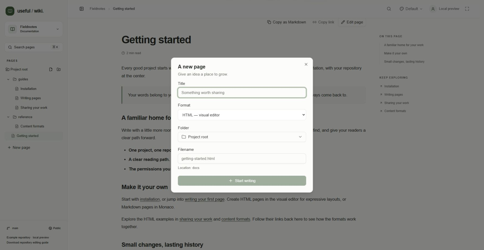
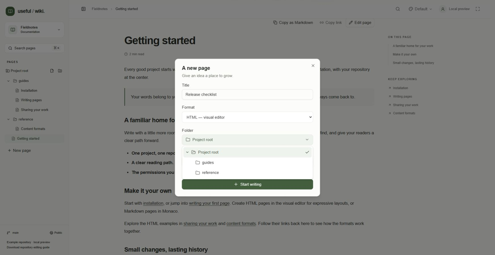
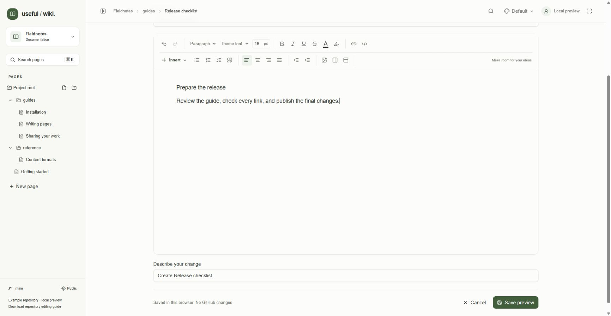
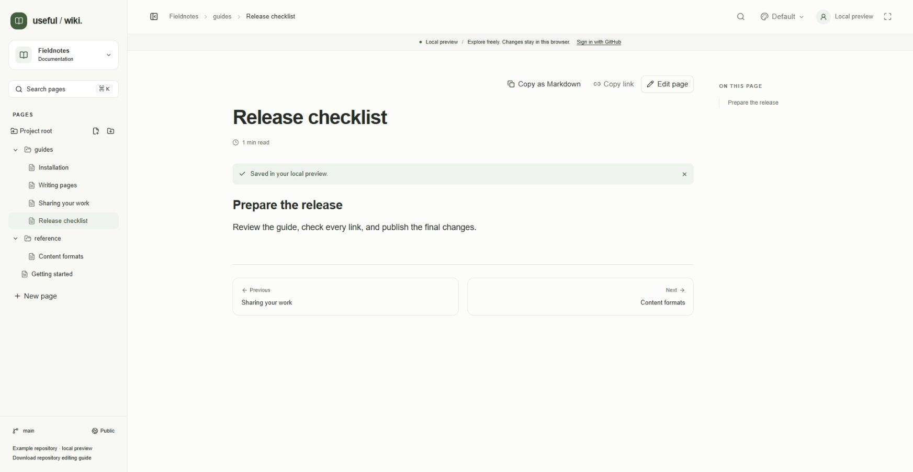
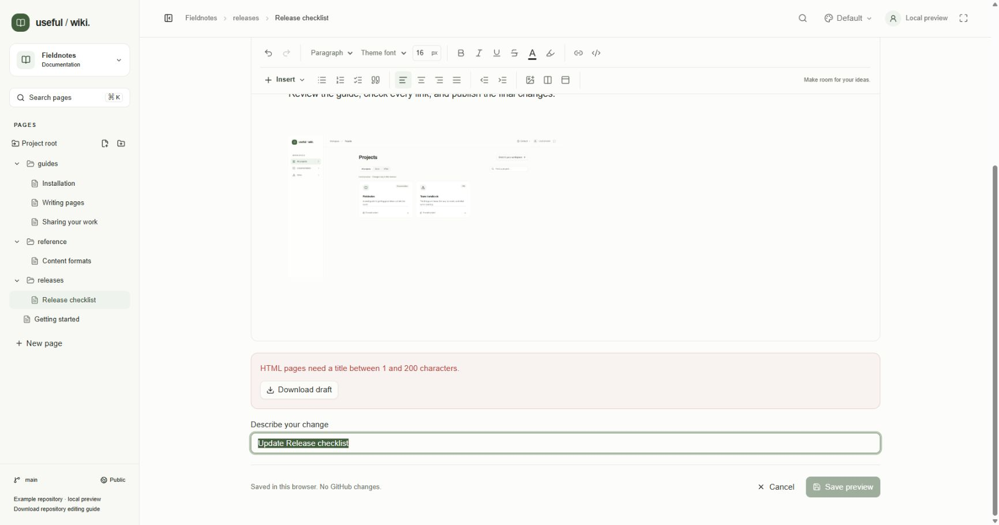

Write a page in Useful Wiki and save it directly to the project's GitHub branch. HTML pages use the visual editor; Markdown pages use the Monaco source editor. You need repository write access to see the creation and editing actions. Start with Getting started if you have not opened a project.
Click New page in the sidebar. To choose a destination first, open a folder or use the folder's New page action.
In A new page, enter a Title of up to 200 characters. The app suggests a lowercase, hyphenated filename from your title.
Choose HTML — visual editor or Markdown — Monaco editor under Format. HTML is the default. Markdown starts with a # Title heading.
Choose an existing Folder. To create a folder, close this dialog and use the sidebar's New folder action first.
Review Filename and the Location preview. Enter only a filename, ending in .html or .md; choose its folder separately. Changing the extension switches the format. Once you edit the filename, subsequent title edits no longer replace your choice.
Click Start writing. This opens an unpublished page. It is not added to GitHub until you save.
A new page cannot reuse an existing page's path, even with different capitalization, or use a folder's path. Paths cannot contain slashes in the filename, leading or trailing spaces, parent-directory segments, or reserved path characters. For ordering and later renaming, see Organizing pages.

Local demo: start a page by choosing its title, format, folder, and filename.

Local demo: the Folder picker separates the destination folder from the filename.
Open the page and click Edit page.
For HTML and older rich-text pages, edit Page title and click the document body to write. Changing the title does not rename the file. The app displays the title above the body, so a duplicate body heading is optional.
Use the toolbar for formatting and layouts, or add images and links. For a Markdown page, edit the source and its first level-one heading instead; there is no separate Page title field.
Review the page and save it using the steps below.

Local demo: write in the visual editor and describe the change below it. Save preview stores the example in this browser; connected projects show Save to repository.
Wait for image uploads to finish. Check every content tab, including panels that are currently hidden.
Under the editor, fill in Describe your change. The suggested message is Create [page title] or Update [page title]. A brief description such as “Add installation prerequisites” makes repository history useful. Messages allow up to 200 characters.
Click Save to repository. You can also press Ctrl+S on Windows/Linux or Cmd+S on macOS while focus is inside the content editor, its toolbar, or its content-tab controls. The shortcut is scoped to the editor; use the button when focus is in the title or change-description field.
Wait for Saving…. The app disables editing and further saves while the request is running.
After success, the page returns to reading view. Click Saved to GitHub. View commit ↗ to inspect the commit. The draft for that saved revision is cleared.
Saving publishes to the project's configured branch; there is no separate publish button or built-in pull-request approval step. Branch rules can prevent a direct save. An empty change description falls back to an update message. Documents have a 700,000-byte limit.
In the demo, the button is Save preview and success says Saved in your local preview. Demo changes stay in browser storage and create no GitHub commits.

Local demo: a successful preview save returns to reading view. This confirmation represents a browser-local save, not a GitHub commit.
Click Cancel to return to reading. With unsaved changes, Useful Wiki asks whether you want to leave and explains that your draft stays in this tab. Canceling an unpublished page returns to its containing folder or project.
Title and content changes are stored in this tab's session storage. Returning to edit the same page revision can display Your unsaved draft from this tab has been restored. Drafts are tied to the user, project, file path, and original revision. They are not synchronized to another device or tab, and are not a permanent backup. The change-description field is not part of the restored draft.
If draft storage is full, keep the tab open and preserve your text elsewhere before leaving. Download draft appears after a save error; it is not a permanent toolbar action.
Read the error under the editor. Use Download draft to preserve the current page in its original HTML, Markdown, or rich JSON format.
If the file changed on GitHub, obtain the latest page and compare it with your downloaded draft. Reloading a newer revision does not automatically merge or restore the older draft.
Reapply or merge the intended edits into the latest revision, then save again. The app uses the revision you originally opened to prevent a silent overwrite.

Local demo: a save with an empty page title fails validation and reveals Download draft. Correct the title to retry; this example has not written a GitHub commit.
For authorization, branch-rule, rate-limit, and upload errors, see Troubleshooting. Repository contributors can also follow Editing from your repository.